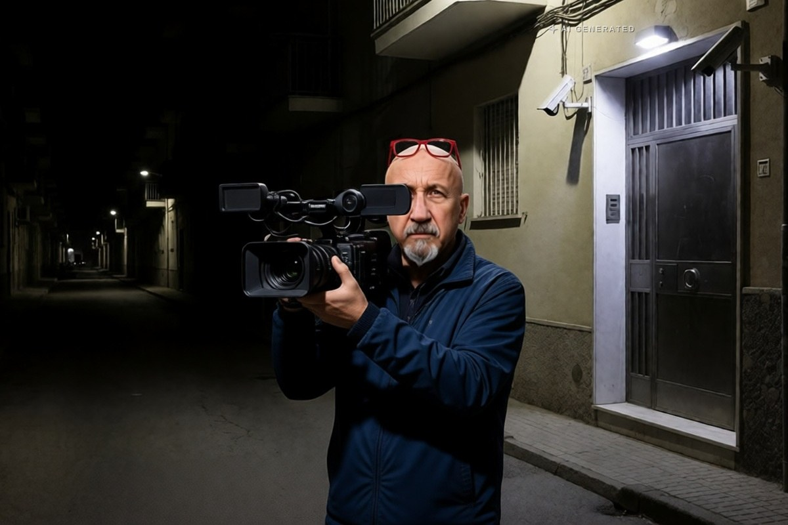

Cronaca · 1 novembre 2026
Inchiesta Dinamite, in appello 46 condanne e un'assoluzione a Messina

Circa 300 anni di carcere in tutto per il traffico di droga che, secondo l'accusa, dal quartiere di Giostra riforniva Messina, Barcellona, Milazzo e i Nebrodi. La sentenza non è definitiva: resta la Cassazione.
di Franco Zanghì
Case fortino, con porte blindate, telecamere e vedette in motorino. Il quartiere di Giostra, a Messina, secondo l'accusa era la base di un traffico di droga che arrivava fino ai Nebrodi. Venerdì la Corte d'appello ha deciso.
La sentenza
La prima sezione penale della Corte d'appello di Messina, presieduta dal giudice Antonino Giacobello, ha emesso 46 condanne e un'assoluzione, per circa 300 anni di carcere in tutto. Dodici pene sono concordate, 27 ricalcolate, 7 confermate. L'unico assolto è Marcello Nunnari.
La sentenza non è definitiva: resta il ricorso in Cassazione, e fino a quel momento vale la presunzione d'innocenza. Le pene concordate sono quelle su cui difesa e procura generale trovano un accordo che il giudice recepisce, senza rifare il processo su quella posizione; le pene ricalcolate sono quelle che l'appello rivede al ribasso o al rialzo rispetto al primo grado.
L'inchiesta
L'indagine si chiama Dinamite e l'hanno condotta la Procura di Messina e i carabinieri. Secondo l'accusa, dal 2019 il traffico riforniva la città, Barcellona, Milazzo e i Nebrodi, con guadagni fino a 500 mila euro al mese. I rifornimenti arrivavano dalla Calabria, ma c'erano anche contatti con la Spagna e l'Olanda e un filo diretto con Catania.
La merce: cocaina, hashish, marijuana, crack. E la spice, la droga sintetica più cercata dai ragazzi, che si presenta come una miscela di erbe trattate con sostanze chimiche e per questo ha effetti molto meno prevedibili di quelli delle droghe tradizionali.
Che cosa resta dopo la sentenza
Giostra è un quartiere popolare della zona nord di Messina, e nella ricostruzione dell'accusa le case fortino erano la sua infrastruttura: porte blindate per rallentare chi entra, telecamere per vedere arrivare le pattuglie, vedette in motorino per avvisare. Una struttura del genere non serve a nascondere lo spaccio, serve a farlo funzionare a orari fissi, come un esercizio aperto tutto il giorno.
Un processo di queste dimensioni fotografa un sistema che ha funzionato per anni: le vedette, gli orari, i turni, i punti di vendita fissi. Fotografarlo, però, non è smontarlo.
Quanti ragazzi, in quegli anni, hanno comprato la loro prima dose in quelle piazze? E dopo le condanne, chi ha preso il posto di chi è finito in carcere? Le sentenze chiudono i processi. Ma le piazze di spaccio, se nessuno le presidia, si riaprono in una settimana.
Fonti
- Giornale di Sicilia, «Messina, 46 condanne e un'assoluzione per traffico di droga», 30 ottobre 2026
- LiveSicilia, «Traffico di droga a Messina, 46 condanne e un'assoluzione in appello», 30 ottobre 2026
- MessinaToday, «La droga venduta h24 come in un supermercato: 46 condanne per l'inchiesta Dinamite», 31 ottobre 2026
- Quotidiano di Sicilia, «Inchiesta Dinamite a Messina, 46 condanne per traffico di droga», 31 ottobre 2026
La sentenza è di secondo grado e non è definitiva: per tutti gli imputati vale la presunzione d'innocenza fino alla pronuncia della Cassazione. La cifra di circa 300 anni di carcere è la somma riportata dalle testate e non un dato ufficiale della Corte.